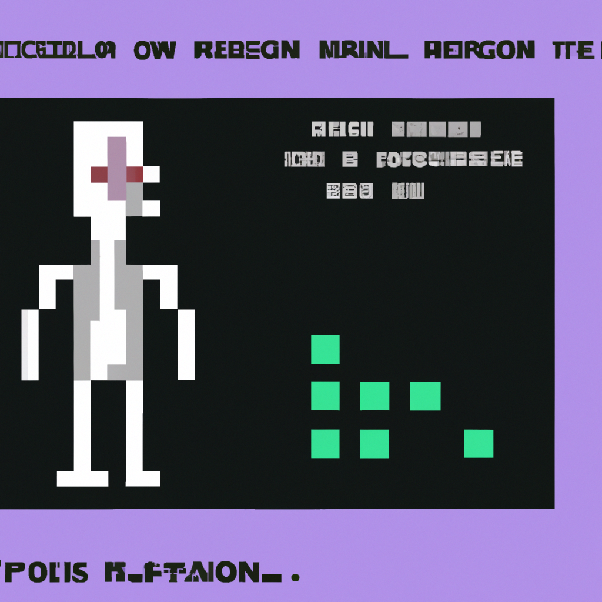

Why AI will never replace the radiologist
AI technology has been advancing at an incredible rate, and it is becoming increasingly capable of performing tasks that were once thought to be impossible. One of the areas where AI has made huge strides is in the field of radiology. However, I believe that AI will never completely replace radiologists.
Radiology is a complex field that requires an incredible amount of data to be analyzed in order to accurately diagnose a patient. AI can be trained to recognize certain patterns, but it is still far from being able to understand the nuances of human anatomy. The human eye is able to detect subtle differences that AI simply cannot.
Radiologists also require a level of clinical judgment that AI cannot yet provide. Radiologists must make decisions based on their experience, knowledge, and intuition. They must be able to make decisions quickly, and AI simply cannot keep up with the speed of a human's decision-making process.
Finally, radiologists must be able to communicate effectively with other medical professionals. AI cannot bridge the gap between the technical and medical worlds.
In conclusion, I believe that AI will never replace the radiologist. AI can be used to assist radiologists, but it cannot replace them entirely. The human eye and the radiologist’s experience and intuition are still invaluable when it comes to diagnosis and treatment.